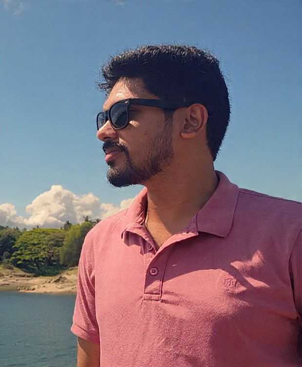

I'm a final-year IT undergraduate at the University of Colombo School of Computing, deeply interested in software and web development. I enjoy building websites that are both visually appealing and functionally robust.
Beyond coding, I bring strong graphic design skills to the table working across Adobe Photoshop, Illustrator, and Premiere Pro. I'm recognized for my communication skills and unwavering dedication to learning.
With a proactive mindset, I'm eager to take on real-world challenges through internships and contribute meaningfully to software development projects.
I'm actively looking for internship opportunities in software and web development. Feel free to reach out, I'd love to chat.